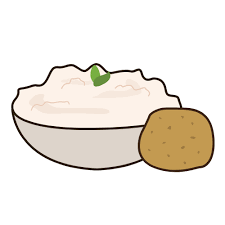

Mashed potatoes

Description
Learn to make mashed potatoes the way grandpa used to make them!
You will love it!
Ingredients
- Milk, semi-skimmed or whole - one cup
- 500g soft boiling potatoes
- Salt
- White pepper
- Nutmeg
- Water
Steps
- Bring water to a boil.
-
While the water is getting to a boil, peel the potatoes and slice them
in small cubes.
-
Once the water is boiling add the potatoes and some salt to water as
well.
- After 20 minutes of boiling, drain the water from the potatoes.
- Mash the potatoes and add the milk.
- Season with nutmeg, white pepper and salt.
- You are all done!
Home